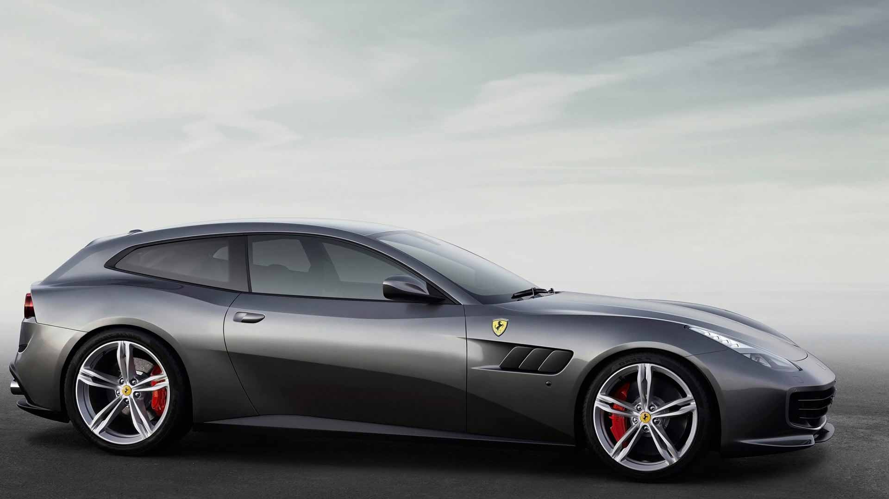

New Ferrari gtc4lusso
 Ferrari GTC4lusso
Innovation, versatility, performance, sportiness and elegance have all been given an entirely new meaning thanks to the way they merge seamlessly in the GTC4Lusso. Powerful yet sophisticated, sporty yet luxurious, Ferrari’s new 12-cylinder really does make every journey a radically different experience. Whether being driven solo or with all four seats occupied, the latest addition to the Ferrari range puts people at the centre of a whole new world.
Whole New World of Experience
The GTC4Lusso was designed to deliver different and entirely surprising emotions. It couples four-wheel drive with a four-wheel steering system to deliver formidably sporty performance even in very low grip conditions. In short, this is a sublimely refined, stylish car that will get its occupants to even extreme destinations in superb comfort, relishing lengthy journeys, challenging twisty routes and long straights alike.
New Hardware Inside and Out
Rear-wheel steering is new to the Lusso. First introduced on the F12tdf, the system’s response depends on a number of variables, but most of the time it steers the rear tires in the same direction as the fronts. This strategy gives the driver more confidence by providing consistent feedback, according to Varisco. Out-of-phase rear steering, the kind that crabs the rear around corners, is reserved only for turn-in and limited to about 0.1 second per use to initiate car rotation.